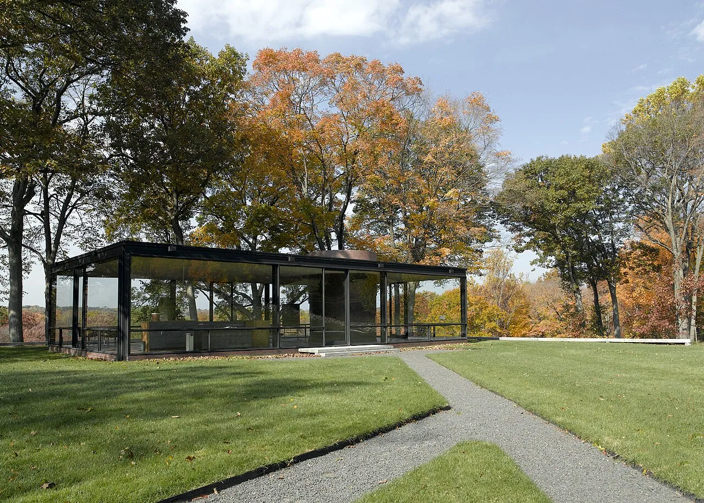
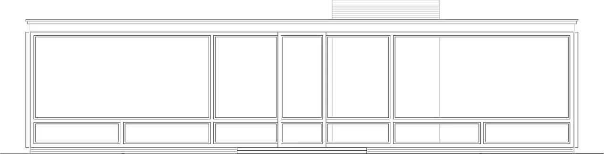
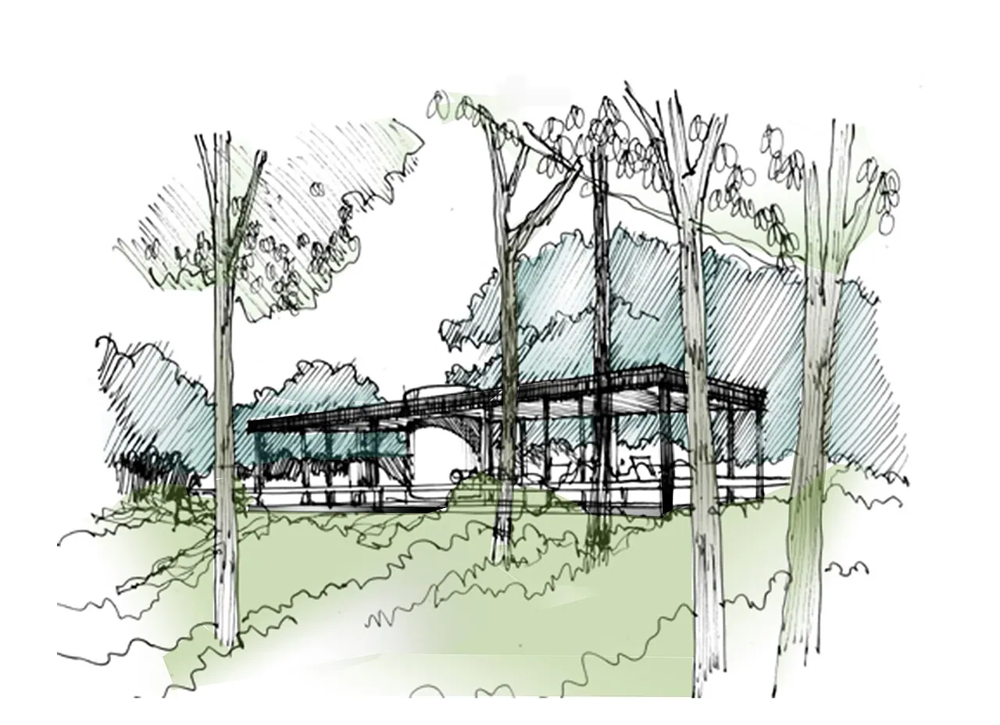

1/10 · Exterior · relacion que existe con la quebradaPhoto: Edelteil · CC BY-SA 3.0 · source

2/10 · Exterior · Glass House (aka Johnson house) in New Canaan, Connecticut, USPhoto: Carol M. Highsmith · Public domain · source3/10 · Exterior · Glass House by Philip Johnson (exterior) in New Canaan, CT, USAPhoto: Staib · CC BY-SA 3.0 · source4/10 · Exterior · reflejo del vidrioPhoto: Edelteil · CC BY-SA 3.0 · source5/10 · Interior · The Phillip Johnson Glass House in New Canaan, CTPhoto: Mds08011 · CC BY 4.0 · source6/10 · InteriorPhoto: A. Latina Brown · CC BY-SA 4.0 · source

7/10 · Section · este es el corte transversal de la casaPhoto: Edelteil · CC BY-SA 3.0 · source

8/10 · Sketch · Croquis de la casaPhoto: Edelteil · CC BY-SA 3.0 · sourcePhotos unavailable9/10Petri Krohn at English Wikipedia · CC BY-SA 3.0 · sourcePhotos unavailable10/10Edelteil · CC BY-SA 3.0 · source